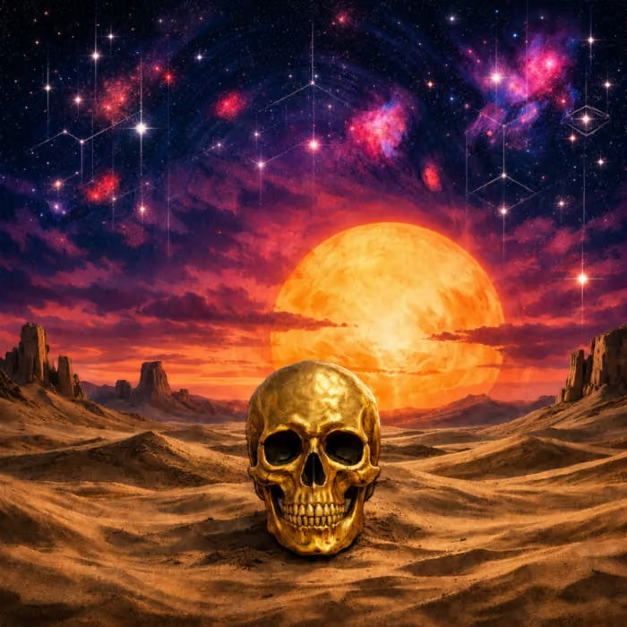

Segui Sun Ground e torna qui per attivare il pass.
Apri Instagram ↗GRATUITO · FAN PASS
UN GIOCO SONORO DI SUN GROUND
Perditi.
Ritrova il segnale.
Entra nell’universo di Exotic Automatic: un viaggio elettronico tra luoghi lontani, ritmi ipnotici e macchine imprevedibili. Ascolta una sequenza, ripeti il segnale e sblocca tutte le 10 trasmissioni. La caccia comincia dalla traccia 7.

CHI C’È DIETRO IL SEGNALESG / 01
Sun Ground
Il progetto elettronico di Antonio Luvarà si muove tra IDM, psichedelia, sperimentazione e pulsazioni da dancefloor. Exotic Automatic cerca una fuga dal rumore quotidiano, tra paesaggi immaginati, automazione e il desiderio di riprendere il controllo. Ora quel mondo diventa un gioco: ogni livello è un segnale da ricordare e ricostruire.
Completa le missioni, decifra i segnali e passa il segnale a qualcun altro.
ASCOLTA EXOTIC AUTOMATIC · PLAYER SPOTIFY
TRASMISSIONI DECIFRATE0 / 10
Gratis · progressi salvati sul tuo dispositivo · nessun account richiesto
SUN GROUND FAN PASS
Entra nella
trasmissione.
Scegli come sostenere Sun Ground e attiva il Fan Pass: un badge fan sul tuo profilo locale e accesso a tutte le missioni.
Anteprima: i follow sono confermati dall’utente e salvati solo in questo browser. Nessuna password o email viene raccolta.
Ascolta.
Ricostruisci.
Memorizza il segnale, poi ripetilo toccando i pad nello stesso ordine. Ogni missione aggiunge un frammento.
SEQUENZA SONORA
TIMBROScegli il colore del synth
Tocca “Ascolta il segnale” per iniziare
Il gioco ricrea un segnale con toni sintetici. Il player ufficiale è solo nella home.
TRASMISSIONE DECIFRATA
✦